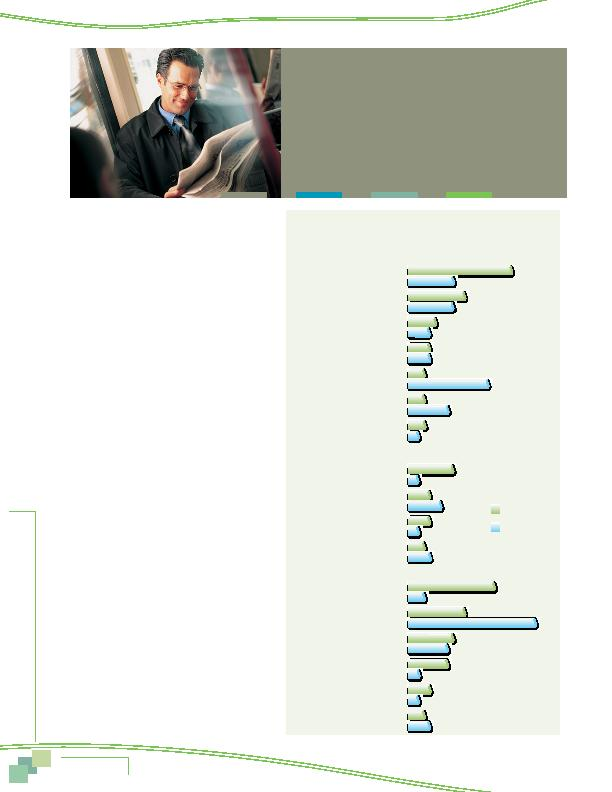

MWCOG-Comm
uter Conn
ecti
on
s-- 2010 State o
f th
e Comm
ute Report
6 6
Reasons for Using Alternative Modes
Respondents who used an alternative mode, either
during the survey week or within the past two years were
asked why they began using those modes. The reasons
are listed in Figure 62, divided into three broad catego-
ries of motivations:
n
Personal benefits benefits the respondent would
expect to receive by using an alternative mode
n
Commute program commute assistance services the
respondent received that encouraged or assisted use
of the alternative mode
n
Personal circumstances personal circumstances or
changes experienced by the respondent
Current Alternative Mode Users
Current
alternative mode users noted motivations in each of the
three categories. The most common personal benefit
reasons were to "save money" (18%) or "save time"
(10%). In the commute program category they cited
"found carpool partner" (8%). Seven percent noted either
limited parking or a parking charge and four percent
said they had received a financial incentive. Personal
circumstances reasons included "changed jobs or work
hours" (15%), "no vehicle available" (10%), "live close
to work or to transportation pick-up location" (8%), and
"moved residence" (7%).
Respondents Who Used or Tried Other
Alternative Modes
Figure 62 also shows reasons
given by "trial users," for trying or using modes they
were no longer using. Several reasons mirrored those
that respondents gave for why they used their current
alternative mode. To "save money" (8%), "save time"
(8%), "tired of driving" (4%), or "avoid congestion" (4%)
were common personal benefit reasons.
But trial users also cited motivations that were likely
temporary. For example, the most common reason, named
by 22% of respondents, was that they had "no vehicle
available." For some, this likely was a temporary condi-
tion. And 14% cited "weather" as their reason, compared
with only three percent of current alternative mode
users, suggesting occasional or short-term use. They were
less likely to note reasons related to job or home loca-
tion changes, which would be more permanent in nature.
Figure 62
Motivations to Start Using Current Mode or Try Another Alternative Mode
(multiple responses permitted)
18%
8%
10%
8%
5%
4%
4%
4%
3%
14%
3%
7%
3%
2%
8%
2%
4%
6%
4%
2%
3%
4%
Save money
Save time
Tired of driving
Avoid congestion
Weather
Get exercise
Concerned about environment
Found carpool partner
No parking at work
Have transit/vanpool incentive
Parking too expensive
Trial Mode
Current Mode
Personal Benefit Motivations
Commute Program Motivations
15%
3%
10%
22%
8%
7%
2%
4%
2%
3%
4%
Changed jobs/work hours
No vehicle available
Close to work/pick-up location
Moved to new residence
Employer/worksite moved
Need travel flexibility
Personal Circumstances Motivations
Commute Patterns
In the two years prior to the survey, almost
a quarter (23%) of commuters used or tried
another type of non-drive alone mode that
they were not using at the time of the survey.